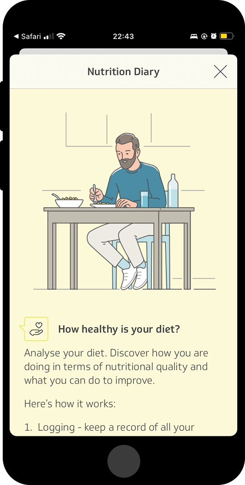
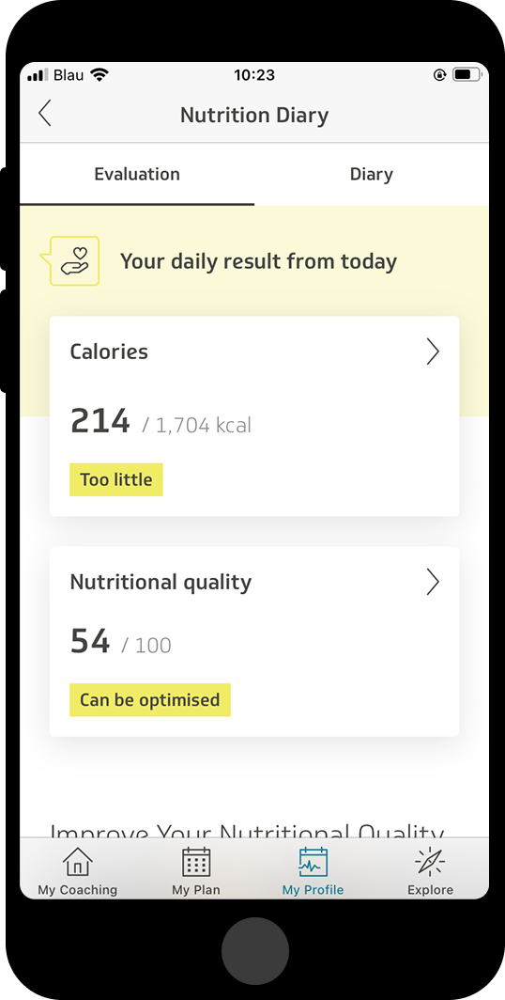
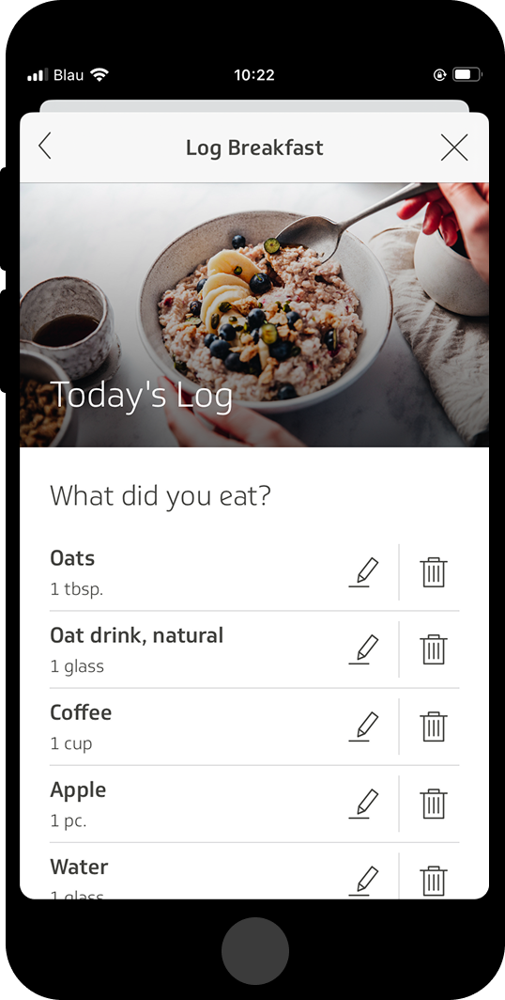
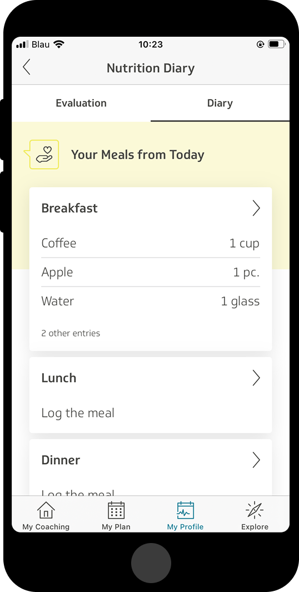
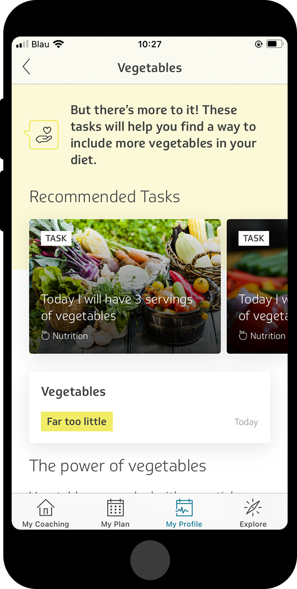
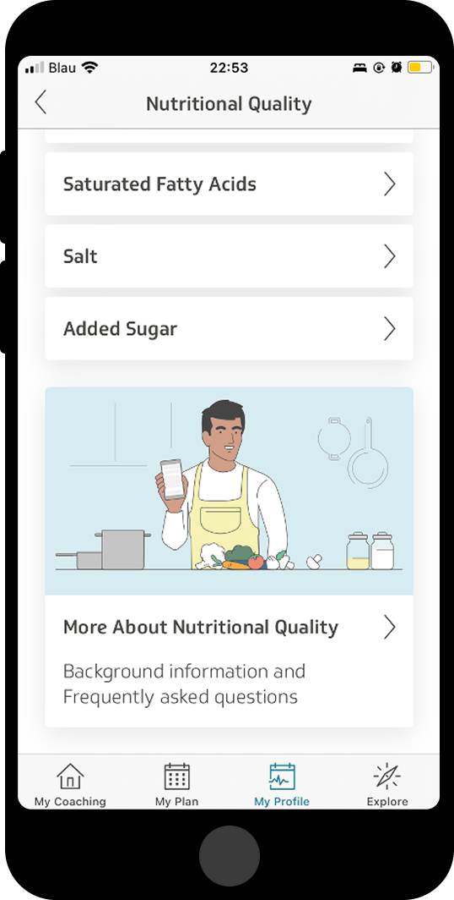

Motivation by Design
How I Turned Nutrition Tracking into Meaningful Insights
Results
- Delivered a nutrition diary feature that calculates dietary quality using 10 food categories and provides personalized recommendations to improve eating habits.
- The new interface clearly visualizes nutritional quality and highlights areas with the greatest potential for improvement.
- User testing confirmed that the adaptive information structure improved comprehension and motivation to complete daily entries.
- The feature became an essential component of the TK-Coach App, strengthening its holistic approach to user well-being.






Situation
Client: Germany’s largest health insurance
As part of Release 3 of the TK-Coach App, a digital health app by Techniker Krankenkasse, the goal was to develop a Nutrition Diary that could assess users’ eating habits and provide personalized recommendations for healthier nutrition. The new feature had to integrate the Healthy Eating Index (HEI) as a scientific foundation for calculating nutritional quality, while fitting seamlessly into the app’s existing experience and educational framework.
Task
Position: Lead UX Designer
Focus: Product Concept, User Flows, Prototyping, User Testing
- Led requirement workshops with the client, translating scientific and business needs into user-centered design goals.
- Conducted market research on best practices for mobile food diaries and competitive nutrition-tracking apps to identify differentiators and usability patterns.
- Created user flows to map the complete interaction process and identify potential pain points and content needs.
- Designed high-fidelity interactive prototypes using the existing design system in Figma, enabling rapid iteration and realistic validation of complex scenarios.
- Conducted user testing to evaluate information placement, clarity of nutritional feedback, and overall usability.
- Applied the principle of “progressive disclosure”, presenting information only when relevant, ensuring users stayed informed without feeling overloaded.
Actions
- Led requirement workshops with the client, translating scientific and business needs into user-centered design goals.
- Conducted market research on best practices for mobile food diaries and competitive nutrition-tracking apps to identify differentiators and usability patterns.
- Created user flows to map the complete interaction process and identify potential pain points and content needs.
- Designed high-fidelity interactive prototypes using the existing design system in Figma, enabling rapid iteration and realistic validation of complex scenarios.
- Conducted user testing to evaluate information placement, clarity of nutritional feedback, and overall usability.
- Applied the principle of “progressive disclosure”, presenting information only when relevant, ensuring users stayed informed without feeling overloaded.
Key learnings
- Information should be presented contextually — at the moment it becomes relevant to the user.
- Users differ in how and when they seek guidance; design must account for these varied information-seeking behaviors.